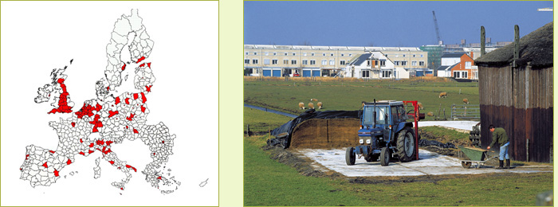

Highlights
- 11% of the land is currently used as build up
- Further urbanization will take place
- Intensive agriculture uses more than 50% of the land
of Peri-Urban regions
- High pressure from livestock on the environment in
many of these regions
- Low biodiversity and small area of natural land use
- Land-use change mainly is agriculture towards urban
